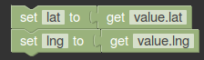

Map¶
Example of Map Open Layers Widget displaying a popup window on icon click
Required¶

Optional¶

Fields¶
Bold field names are required fields, others are optional.
| Field Name | Type | Description |
|---|---|---|
| lat | Number | Latitude of the event |
| lng | Number | Longitude of the event |
| icon | Text | Icon to use in the map |
| label | Text | Text to show as icon label |
| description | Text | Text to show in the popup window when icon clicked |
| id | Text | Event identifier |
| polyline | Set | A set of points to draw a polyline |
| action | Text | Name of the action, by default “add” |
If two events are sent with the same id, the last one will replace the first one
Actions¶
center¶
Center the map at the latitude and longitude specified for the current event